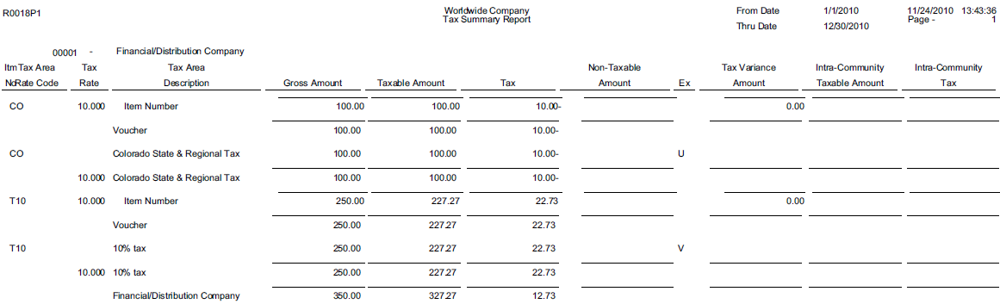

| Purpose |
| Scope |
| Details |
| Basic Tax Processing Overview Video Presentation |
| Set Up Tax Rules (P0022) |
| Tolerance Rules |
| Calculation Rules for Discount and Tax Amounts |
| Example 1 |
| Example 2 |
| Example 3 |
| Example 4 |
| Set Up Tax Rate/Areas (P4008) |
| Revising Tax Rate Areas |
| Setting Up Tax Rate Areas |
| Setting Processing Options for Tax Rate/Areas (P4008) |
| Display Tab |
| Edits Tab |
| Tax Explanation Codes (P0004A) |
| Sales Tax (Seller-Assessed) |
| Use Tax (Self-Assessed) |
| Value Added Taxes (VAT) |
| Tax Calculations |
| Tax Explanation Types |
| Soft Rounding for Taxes |
| Setup for Example |
| Summary |
| Tax (F0018) Table and Tax Summary Report (R0018P) |
| Understanding the Tax File Revisions Program |
| Adding Transactions to the Taxes Table |
| Tax Summary Report |
| Understand Vertex in Accounts Payable & Accounts Receivable (P73GE0) |
| Oracle Software Support Financials Support Statement |
| Vertex Overview |
| Vertex Tax Explanation Codes and Geocodes |
| Tax AAIs |
| User Defined Codes for Vertex |
This document discusses how to understand tax set up within Accounts Payable and Accounts Receivable in Oracle JD Edwards EnterpriseOne Financial system including Vertex.
This document is intended for the EnterpriseOne user who is setting up Tax Rules.
This section explains the purpose of setting up tax rules and how they are used to calculate the:
Tax rules are defined in the Work with Tax Rules program (P0022) and can be established differently based on company and Financial module (i.e. Accounts Payable, Accounts Receivable and General Accounting). It is not possible to have different tax rules for a company within a module (for example Accounts Payable). However, a company can have separate tax rules for each of the three modules:
The system uses these rules to:
When a tax amount is entered while creating a financial transaction that differs from the system calculated tax amount, a warning message for all tax types (except VAT) is triggered. For VAT taxes, the system uses the tolerance rules that are identified in Work with Tax Rules (P0022). In this case, the system issues a warning message only when the difference between the entered tax amount and calculated tax amount exceeds the tolerance limit established in either the Tolerance Amount Warning (data dictionary item TLA1) or the Tolerance Rate Warning (data dictionary itemTLR1). Furthermore, limits can be set so a hard error is triggered when the difference between the two amounts exceeds the Tolerance Amount Error (data dictionary Item (TLA2) or the Tolerance Rate Error (data dictionary item TLR2).
Calculation rules specify which method is used for calculating discount and tax amounts. Note - Calculation rules are not displayed if you choose the General Accounting system. To better explain the calculation rules, several examples follow. For all the examples below, the following information is used:
This example illustrates how these amounts are calculated when:
A user enters a voucher for $100 as the Taxable Amount (data dictionary item ATXA). This system calculates the Tax Amount (data dictionary item STAM) as Taxable Amount multiplied by the tax rate:
The system calculates the Gross Amount (data dictionary item AG) as sum of the Taxable Amount (data dictionary item ATXA) and the Tax Amount (data dictionary item STAM):
Following the calculation of the Gross Amount (data dictionary item AG), the system calculates the Discount Available (data dictionary item ADSC) as the Gross Amount multiplied by the discount percentage.
This example illustrates how these amounts are calculated when:
A user enters a voucher for $100 as the Taxable Amount (data dictionary item ATXA). This system calculates the Tax Amount (data dictionary item STAM) as Taxable Amount multiplied by the tax rate:
The system calculates the Discount Available (data dictionary item ADSC) as the as the Taxable Amount (data dictionary item ATXA) multiplied by the discount percentage.
Following the calculation of the Tax Amount (data dictionary item STAM), the system calculates the Gross Amount (data dictionary item ADSC) as the sum of the Taxable Amount (data dictionary item ATXA) and the Tax Amount.
This example illustrates how these amounts are calculated when:
A user enters a voucher for $100 as the Taxable Amount (data dictionary item ATXA). This system calculates the Tax Amount (data dictionary item STAM) as Taxable Amount multiplied by the tax rate:
The Discount Available (data dictionary item ADSC) is then calculated as follows:
The Gross Amount (data dictionary item AG) is then calculated as the sum of the Taxable Amount (data dictionary item ATXA), Tax Amount (data dictionary item STAM) and Discount Available (data dictionary item ADSC).
This example illustrates how these amounts are calculated when:
A user enters a voucher for $100 as the Taxable Amount (data dictionary item ATXA). This system calculates the Tax Amount (data dictionary item STAM) as Taxable Amount multiplied by the tax rate:
The Discount Available (data dictionary item ADSC) is then calculated as follows:
The Gross Amount (data dictionary item AG) is then calculated as the sum of the Taxable Amount (data dictionary item ATXA), Tax Amount (data dictionary item STAM) and Discount Available (data dictionary item ADSC).
Tax Rate Areas are used to calculate and track the different taxes that are paid to suppliers or by customers. Each tax area is a physical, geographic area, such as a state, province or county. Different tax authorities assess a variety of taxes for each geographic area. Additionally, each authority within a tax area can have a different tax rate. An Effective Date (data dictionary item EFTJ) must be assigned to each Tax Rate Area. Rather than checking for duplicate Tax Rate Area information, the system uses the Effective Dates to validate the correct information to use. The system triggers an error when the Effective Date for multiple records for the same Tax Rate Area overlap. The Work with Tax Rates/Areas (P4008) program also provides take into account special situations, such as:
Example set up below:
All information in a Tax Rate/Area can be modified using the Work with Tax Rate/Areas (P4008). It is not recommended to change the Tax Rates within an existing Tax Rate/Area record because this modification can lead to a variety of data integrity issues. If this information needs to be adjusted, add a new record for that Tax Rate/Area and set the Expiration Date (data dictionary item EFDJ) of the old one to expire prior to the Effective Date (data dictionary item EFTJ) of the new one.
The Tax Rate/Area Revisions (P4008) can be accessed from the Tax Processing and Reporting (G0021) menu. Below are the important fields when adding a new Tax Rate Area:
| Fields | Field Description |
|---|---|
| Tax Rate/Area (data dictionary item TXA1) | Enter a code that identifies a tax or geographic area that has common tax rates and tax authorities. The system validates the code you enter against the Tax Areas (F4008) table. The system uses this value in conjunction with the Tax Explanation Code (data dictionary item EXR1) and designated tax rules to calculate tax and GL distribution amounts on invoices or vouchers. |
| Effective Date (data dictionary item EFTJ) and Expiration Date (data dictionary item EFDJ) | Enter the date when a transaction, contract, obligation or policy rule becomes effective or ceases to be in effect. |
| Tax Authority (data dictionary item TA1) | Enter the address book number of the tax agency that has jurisdiction in the tax area. You pay and report sales, use, or VAT taxes to this agency. Examples include states, counties, cities, transportation districts or provinces. A single Tax Area can have up to five tax authorities. |
| GL Offset (data dictionary item GL01) | Enter a code that indicates how to locate the tax account for entries into the General Ledger (F0911). This field points to automatic accounting instructions (AAIs) that, in turn, point to the tax account. Only a Tax Explanation Code (data dictionary item EXR1) of V uses the GL Offset for the any subsequent tax authorities after the first line. The system ignores the field for all other tax explanation codes. However, the JD Edwards EnterpriseOne Sales Order Management and JD Edwards EnterpriseOne Procurement systems require a value in these fields. |
| Tax Rate (data dictionary item TXR1) | Enter a number that identifies the percentage of tax that should be assessed or paid to the corresponding tax authority. Enter the percentage as a whole number and not as the decimal equivalent. For example, to specify 7 percent, enter 7, not .07. For Tax Explanation Codes B (VAT + Use) or C (VAT + sales), the VAT tax authority and tax rate must be entered on the first line in the Tax Rate/Area record. The non-recoverable percent applies to the first tax rate only when using tax explanation codes C and B. For other tax explanation codes, the system multiplies the non-recoverable percent by the total tax, but applies it to the first tax authority only. For Canadian taxes, always specify on the first line the tax authority and tax rate for the GST portion of the tax. |
| Compound Tax (data dictionary item TC2) | Select this option that is used in Canada to specify whether to calculate PST (Provincial Sales Taxes) tax after GST (Goods and Services Tax) has been added to the product value. The system calculates the PST before GST has been added to the product value. For example, suppose that you have a tax area set up with 7 percent GST and 8 percent PST, and you select the option to calculate tax on tax. If you enter a voucher for a taxable amount of 1000 CAD, the system calculates the GST as 70 CAD, adds it to the taxable amount, and multiplies the PST by that result (1070 CAD). If you do not use compound taxes, the system calculates PST on the taxable amount only. Note - This option is valid only for tax explanation codes that begin with the letters B and C. To calculate compound taxes for tax explanation code V, use tax explanation code V+. This code is available only for the second tax authority (line 2 in the list on this form) and must identify a non-GST tax authority. |
| VAT Expense (data dictionary item TT3) | Select this option that indicates the percent of VAT that is not recoverable. You enter the non-recoverable percentage in the Tax Rate field to the left of this option. Note. This option is valid only with tax explanation codes that begin with the letters C, B, and V. This code is available only for the third, fourth, fifth tax authorities (lines 3 through 5). |
| Item Number (data dictionary item UITM) | Enter a number that the system assigns to an item. It can be in short, long or third item number format. The number of the item or item grouping to which the tax applies. Values for item groupings are 3 through 8. If you specify a value for an item grouping, you must ensure that the processing option to validate item numbers, which appears on the Edit tab, is set to 0 (off). If this processing option is set incorrectly, the system attempts to validate the item grouping number as an actual item number. |
| Maximum Unit Cost (data dictionary item MTAX) | Enter a number that identifies the maximum amount that an item can be taxed. If the unit cost of an item is more than the amount that you specify in this field, the maximum unit cost becomes taxable. Note. This field is used for processing sales and purchase orders only. This field is required for processing taxes in the state of Tennessee. |
Processing options enable you to specify the default processing for programs and reports.
Tax explanation codes are stored in UDC table 00/EX and perform specific calculations based on the type of tax used (e.g. Sales, Use or VAT).
Sales Tax is placed on purchased goods. In most cases, the seller of the goods and services calculates and remits sales taxes to the appropriate tax authority. The system calculates sales tax on the gross amount of the transaction. Customers who buy goods for their own use pay sales tax at the time of purchase. Suppliers who buy goods for resale do not pay sales tax.
Use Tax is when the buyer of goods and services calculates and remits the sales tax. A use tax might be levied when a company keeps the goods that it manufactures for its own use. For example, a pencil manufacturer might owe a use tax when it keeps some of the pencils that it manufactures for the use of its employees. A use tax might also be levied when a buyer in one tax area is responsible for direct payment of local sales taxes on goods and services purchased outside the local tax area. For example, a catalog company in New York does not collect sales taxes from buyers in Colorado. The buyers must pay the Colorado tax authorities directly. Use tax is used in the Accounts Payable system only.
A value added tax (VAT) is collected at each stage in the production and distribution of goods and services as value is added to the product (i.e. by packaging a product). In other words, a business must pay tax on the difference between the selling price of the product and the cost of materials and services purchased to produce the product. The VAT amount is collected when the business sells the product. Value added taxes (VAT) are assessed on most sales and purchases.
Each tax explanation code specifies a particular algorithm that affects how amounts are distributed to the General Ledger (F0911). Any new tax explanation codes must begin with the letter S, U, V, B, C or E and use the same algorithm as the corresponding standard tax explanation codes. For example, S1 uses the same algorithm as S and V7 uses the same algorithm as V. The letter T follows some tax explanation codes (i.e. ST). These tax explanation codes are used when entering only the tax portion of a transaction. For example, if a voucher is entered without tax information, another voucher can be entered with the appropriate tax explanation code (with a letter T) to indicate that the entire voucher represents a tax amount.
Rounding is an important issue for businesses using taxes and discounts and processing thousands of transactions daily. In order to minimize the negative effects of rounding, EnterpriseOne software tracks each rounded amount and compensates for it in the next pay item of the transaction. The system uses rounding on transactions with a single pay item and soft rounding in conjunction with standard rounding on transactions with multiple pay items.
Whenever amounts are calculated and rounding is necessary, the software keeps track of the leftover amount. The system stores the leftover amount in cache (memory) and then adds or subtracts that amount from the next pay item before rounding that value. Please note: Soft rounding does not carry over from transaction to transaction. If there is a single pay item on a transaction, any amount left over from rounding will be discarded. If a pay item is added to a transaction at a later time, all calculations for taxes and/or discounts will be redone, permitting "recovery" of any remainders that were previously discarded.
Pay items on a single transaction may have different tax rate/areas. Soft rounding will occur separately for each tax rate/area within a transaction to keep these amounts discrete. For example, if the first and the fifth pay items on a transaction have the same tax rate/area, and all other pay items have a different one, then there will be two leftover amounts tracked, one for each tax rate/area.
The following example explains how soft rounding works. The example is specific for Accounts Receivable (A/R), but the process is the same for Accounts Payable (A/P).
Enter an invoice using Standard Invoice Entry (P03B11) in a currency of SGD. On the first line, enter a taxable amount of 1, a tax rate/area of TST and a tax explanation code of S, then tab out of the grid row. The tax amount is displayed as 1. Since a value of 0.8 Singapore Dollars (taxable amount of 1 multiplied by the tax rate of 0.8 = 0.8) cannot be displayed by the system, the amount is rounded to 1. However, the difference of 0.2 (1 minus 0.8) is actually tracked by the system.
On the second pay item of the invoice, enter exactly the same information as before and exit the row. Again, the tax amount displays as 1. Although it appears that nothing changed, the difference from the previous line was actually included in the second calculation (1 multiplied by 0.8 = 0.8). However, before this number is also rounded to 1, the 0.2 difference from the first line is subtracted, leaving an amount of 0.6 (0.8 minus 0.2 = 0.6). Now the amount of 0.6 is rounded to 1 and a remaining amount of 0.4 is tracked (1 minus 0.6 = 0.4)
On the third pay item of the invoice, enter exactly the same information as before and exit the row. This time the tax amount is zero for this line. 1 multiplied by 0.8 = 0.8, but when the difference from the previous line (0.4) is subtracted, the amount remaining is 0.4. Since we cannot write 0.4 Singapore Dollars, the amount is rounded down to zero, and a remaining amount of -0.4 is tracked.
On the fourth pay item of the invoice, enter exactly the same information as before and exit the row. This time the tax amount is 1 and remaining amount of -0.2 is tracked (1 multiplied by 0.8 - (-0.4) = 1.2).
Repeat this process for each pay item that is entered with the same tax rate/area and tax explanation code until 10 pay items are entered. Thus, if 10 lines with a tax amount of 1, a tax rate/area of TST and a tax explanation code of S are entered, the tax amount for the lines will be 1, 1, 0, 1, 1, 1, 1, 0, 1, 1, respectively. If the individual amounts are summed, there is a total taxable amount of 10 and a total tax amount of 8, which is correct.
If the system rounds up for one line, the difference is subtracted before the second line is rounded. If the system rounds down, the remaining amount is added to the next amount before the rounding for that pay item occurs. If the system did not perform soft rounding, overpaying or underpaying could occur. For example, if an invoice was entered for an amount of 100.5 Singapore Dollars on 100 lines and the system did not soft round, the amount on each line would be 101 (100.5 rounds up to 101) and an overpayment (or over-invoice) of 50 Singapore Dollars would be issued [(101 rounded) minus (100.5 calculated) multiplied by100 lines]. Depending on the number of transactions processed, soft rounding differences can have a significant impact.
While soft rounding does not control for over payments and underpayments between transactions, it does minimize the impact of rounding within a single transaction. The soft rounding process is the same for both Accounts Payable transactions and Accounts Receivable transactions.
After you generate vouchers and invoices, you must post them to the general ledger to create offsetting entries and to update the F0902 table. Additionally, if the transactions have taxes that you want to reconcile or report on, you must update the Taxes (F0018) table. For invoices and vouchers with tax, the system updates the Taxes (F0018) when posting the transactions if Processing Option 1: Update Tax File on the Taxes tab of the General Ledger Post Report program (R09801) is anything but blank. The system creates one record in the Taxes table for each invoice or voucher pay item that has taxes. When you revise a posted pay item and post the revision, the system generates an additional record in the Taxes table for that pay item and increases the Line Number field incrementally.
For journal entries entered with VAT, the system updates the Taxes (F0018) table when the transaction is entered, regardless of whether it is posted. The system creates one record in the Taxes table for each journal entry line that has taxes. If you revise a journal entry with VAT, the system writes a record for the revision if the journal entry was posted when it was revised. Otherwise, the system changes the information on the existing F0018 record. Each record in the Taxes table contains fields for each tax authority, tax rate, and tax amount so that when you run reports, the system can provide you with a total tax amount by tax authority.
You use the Tax File Revisions program (P0018) to review, add, delete, and modify records in the Taxes table. For example, if you did not set the appropriate processing option in the version of the General Ledger Post Report program (R09801) to update the Taxes table, you might need to enter the tax information manually using the Tax File Revisions program. Similarly, you might want to delete a transaction from the table.
The system does not allow revisions to documents that begin with the letter P or R (which are normally used for voucher and invoice transactions). Because you cannot revise invoice or voucher records in the Taxes table, you must either:
If you revise the taxable or nontaxable amounts of a journal entry and you clear the Tax field, the system recalculates the tax amount
Access the Tax File Revisions form:
| Fields | Field Description |
|---|---|
| Document Type(DCT)/Number(DOC)/Company(KCOO) | Enter a number that identifies an original document. This document can be a voucher, a sales order, an invoice, unapplied cash, a journal entry, and so on. If you need to add a document for tax explanation code V, the document type, document number, and document company that you specify must exist in the Account Ledger (F0911). |
| Order Suffix (SFXO) | In the AR and AP systems, this is a code that corresponds to the pay item. In the Sales Order and Procurement systems, this code identifies multiple transactions for an original order. For purchase orders, the code is always 000. For sales orders with multiple partial receipts against an order, the first receiver used to record receipt has a suffix of 000, the next has a suffix of 001, the next 002, and so on. |
| Company (CO) | This field is required. |
| Account Number (ANI) | Identifies an account in the general ledger. You can use one of these formats for account numbers:
|
| Address Number (AN8) | Enter a number that identifies an entry in the Address Book system, such as employee, applicant, participant, customer, supplier, tenant, or location. This field is required. |
| Tx Ex (EXR1) | Enter a user-defined code (00/EX) that controls how a tax is assessed and distributed to the general ledger revenue and expense accounts. This field is required. |
| Tax Rate/Area (TXA1) | Enter a code that identifies a tax or geographic area that has common tax rates and tax authorities. The system validates the code you enter against the F4008 table. The system uses the tax rate/area in conjunction with the tax explanation code and tax rules to calculate tax and GL distribution amounts when you create an invoice or voucher. This field is required. |
| Tax Point Date (DSVJ) | Enter a date that indicates when you purchased goods or services, or when you incurred a tax liability. |
| GL Date (DGL) | Enter a date that identifies the financial period to which the transaction is to be posted. The company constants specify the date range for each financial period. You can have as many as 14 periods. Generally, period 14 is used for audit adjustments. The system validates this field for PBCO (posted before cutoff), PYEB (prior year ending balance), PACO (post after cutoff), and WACO (post way after cutoff) messages. This field is required. |
| Line Number (LNID) | Enter a number that identifies multiple occurrences, such as line numbers on a purchase order or other document. Generally, the system assigns this number, but in some cases you can override it. |
| Non-Taxable Amount (ATXN) | Enter the amount upon which taxes are not assessed. This is the portion of the transaction not subject to sales, use, or VAT taxes because the products are tax-exempt or zero-rated. |
| Taxable Amount (ATXA) | Enter the amount on which taxes are assessed. This field is required. |
| Tax (STAM) | Enter the amount assessed and payable to tax authorities. It is the total of the VAT, use, and sales taxes (PST). Although you can enter the tax amount, the system might return an error if the amount that you enter differs from the system-calculated amount. For error-free processing, leave this field blank and let the system assign the amount. |
| Extended Cost (ECST) | For accounts receivable and accounts payable, the invoice (gross) amount. For sales orders and purchase orders, the unit cost times the number of units. Enter the sum of the taxable and tax amounts. This field is required. |
On the Tax Processing and Reporting menu (G0021), select Tax Summary Report/Use VAT. Use this program to print totals only for each tax area and tax rate for each company.

Oracle Software Support will help with set up, posting and any issue that would be supported under normal tax rate issues. Support engineer assigned to the case will determine whether the issue will be supported by the Accounts Payable and/or supported by Procurement group depending on program and type of records being created. Issues related to incorrect rate calculations or needing help running reports would be supported directly by Vertex.
Vertex is a Sales and Use Tax Product that keeps a database of rate information that is periodically updated on a state, city, district or county basis. It also comprises of a tax decision maker as well as multiple reporting capabilities. Monthly updates are sent to clients in an electronic media format that can easily be uploaded into Vertex. Vertex will be responsible for communicating with the tax jurisdictions on changes to keep up with current rates. Vertex allows the preparation of tax returns when paying jurisdictions. For full vertex details, refer to our JD Edwards EnterpriseOne Tax Processing 9.1 Implementation Guide, which can be found here.
The only tax explanation codes used for Vertex include:
When using Vertex, Tax Rate/Area will now be referred to as Geocodes. These Geocodes will indicate to Vertex where to get the rate information. A GeoCode is a nine-digit code that represents a taxing jurisdiction. Example xxyyyzzzz where xx = State, yyy = County and zzzz = City (found in the Suppliers Address Book information). Job R730101 will globally add Geocodes to existing AB records based on the AB information for city, state and postal code and county. These can be manually changed. GeoCodes can have a V, M or O prefix to distinguish it from other JDE Tax Rate Areas. (See Vertex online guide for explanation of each.).
These AAIs are used for taxes:
In the AP and AR systems, you set up AAIs for business units and object accounts by company. The system is hard coded to use the tax AAIs for the company. If a GL Offset exists in the Vertex Q Series Constants, the system uses AAI item PTxxxx or RTxxxx, where xxxx, is the GL Offset. Otherwise, it uses PT or RT.
To assign a Geocode or change a Geocode on an address book record, the record must contain a valid search type code from UDC table (73/ST - Geocode Assignment Search Type). The search type validation is for address book records only, not transactions.
UDC Table (73/ST) contains these search types:
The Update Address Book Geocodes program (R730101) uses the values in UDC table (73/ST) to add Geocodes to existing address book records.